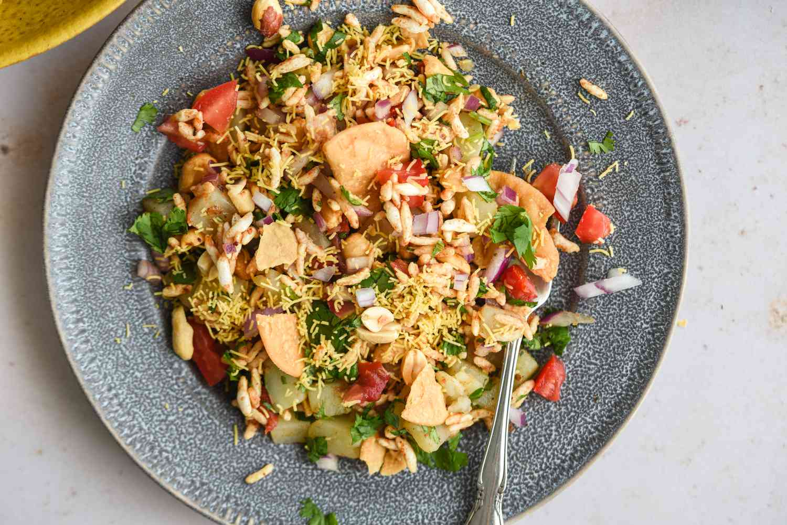

Bhel Puri

Description
Bhel Puri is a popular Indian street snack recipe that is extremely
savory. It is made with puffed rice, chopped veggies, and chaat chutneys.
Ingredients
- 1 cups murmura
- 1/2 onion
- 1/2 potato
- 3 papdi
- 3 tablespoons namkeen mixture
- 2 tablespoons fried peanuts
- 2 tablespoons chopped tomato
- 1/2 teaspoon chaat masala
- 1/4 teaspoon kashmiri red chilli powder
- 1/4 teaspoon salt
- 3 tablespoons tamarind chutney
- 2 tablespoons green chutney
- 1 teaspoon lemon juice
- 2 tablespoons sev
- 1 teaspoon chopped coriander
Steps
- Dry roast murmura until crispy. Place murmura in large mixing
bowl.
- Add 1/2 onion, 1/2 potato, 3 crushed papdi, 3 tablespoons mixture,
2 tablespoons tomato, 1/2 teaspoon chaat masala, 1/4 teaspoon chilli
powder, and 1/4 teaspoon salt. Mix well making sure all the spices
are combined.
- Add 3 tablespoons tamarind chutney, 2 tablespoons green chutney, and
1 teaspoon lemon juice. Mix well, but don't let the murmara geet soggy.
- Add 2 tablespoons sev and mix. Garnish with onion and coriander.